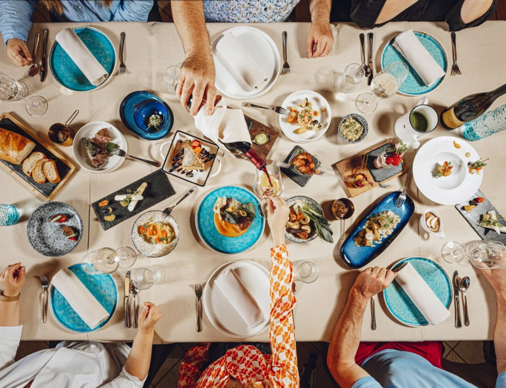
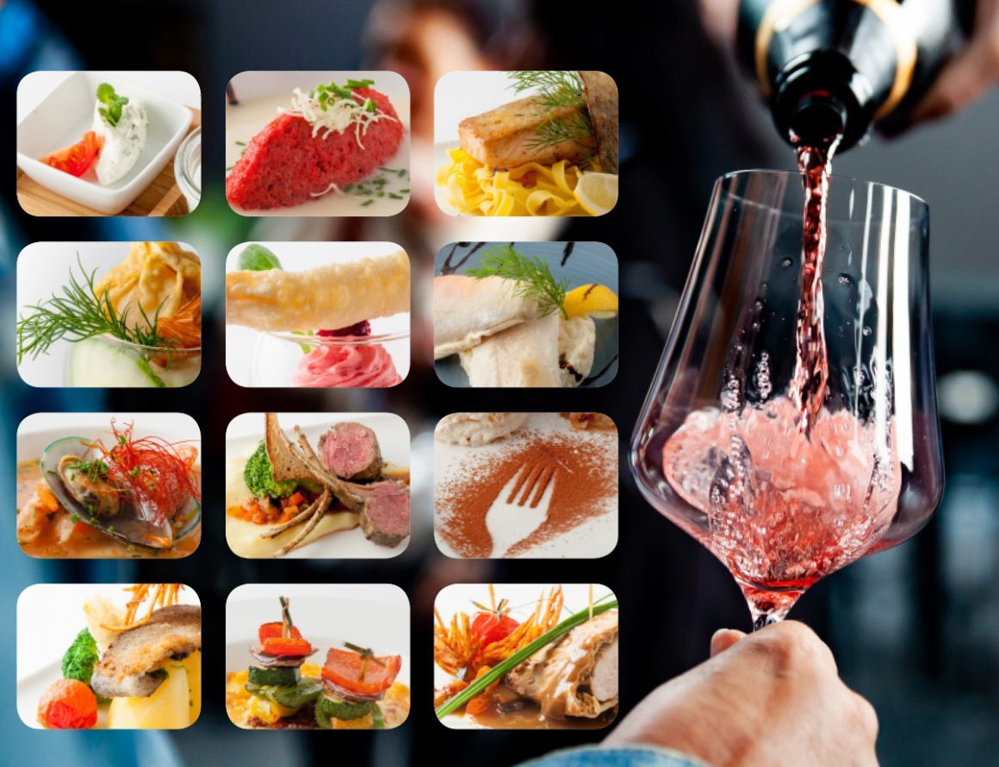
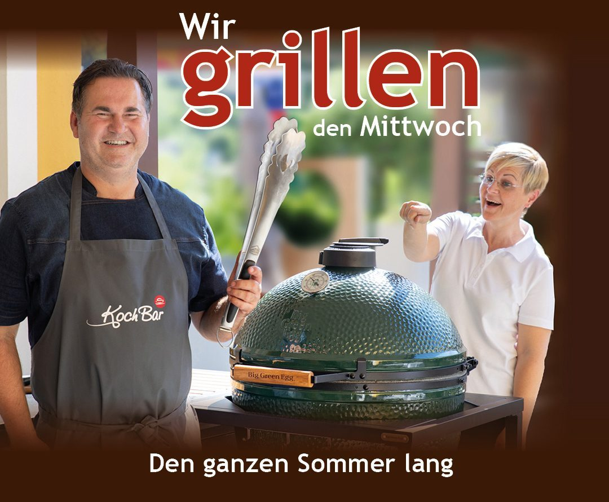
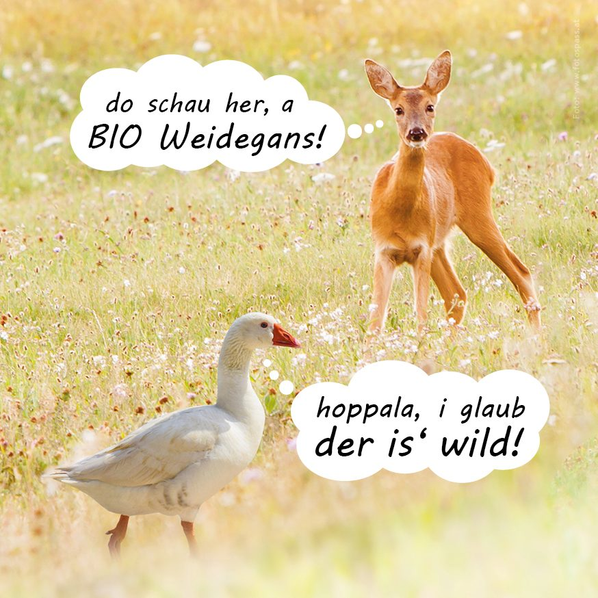
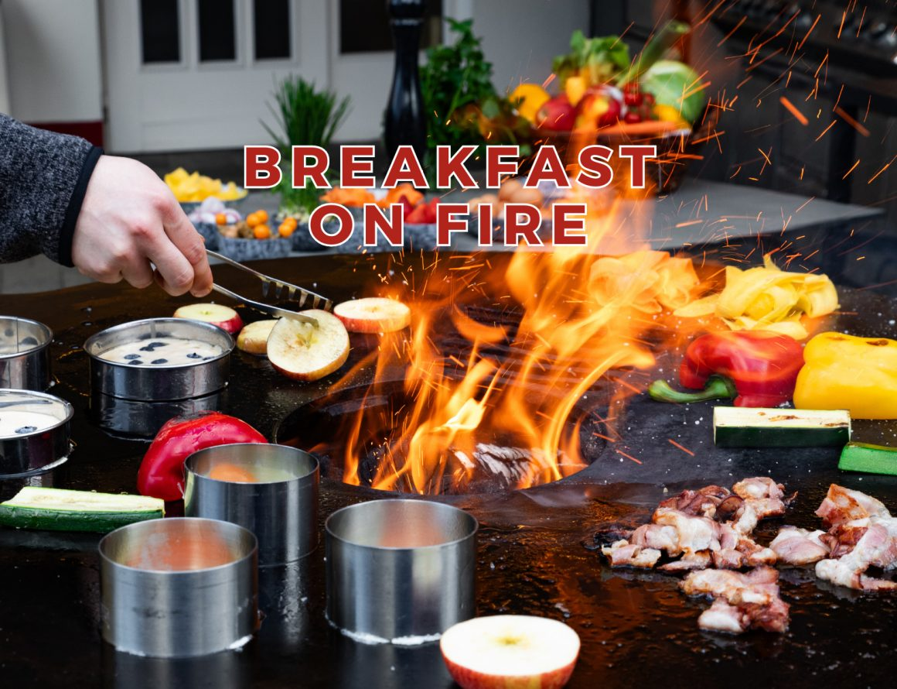
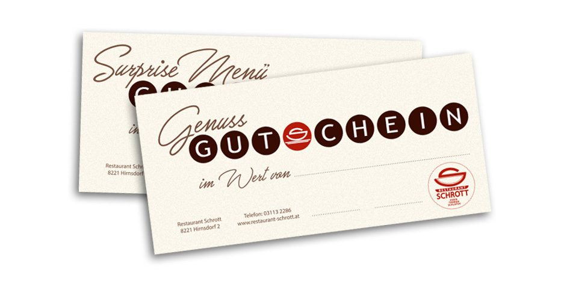

Restaurant & Kulinarik
Unser Küchenteam entführt Sie auf eine kulinarische Reise in die kreative Welt des Geschmackes – mit regionalen und saisonalen Produkten von Lieferanten aus der Umgebung.
Landgasthof in vierter Generation · Hirnsdorf
Café, Restaurant und Komfortzimmer im Feistritztal. Durchgehend warme Küche aus regionalen Produkten, fünf Zimmer für die Nacht danach, vier Räume für Ihr Fest – und ein Spielplatz für die Kleinen.

Drei Häuser unter einem Dach
Was 1 Betrieb in 4 Generationen gelernt hat: Gäste kommen wegen der Küche, bleiben wegen der Herzlichkeit und kommen zum Feiern wieder.
Unser Küchenteam entführt Sie auf eine kulinarische Reise in die kreative Welt des Geschmackes – mit regionalen und saisonalen Produkten von Lieferanten aus der Umgebung.
Fünf Zimmer, mit viel Feingefühl liebevoll und attraktiv ausgestattet: Dusche, WC, Sat-TV, Klimaanlage, kostenloses WLAN und Frühstück. Einzelzimmer ab € 78,–, Doppelzimmer ab € 63,– pro Person.
Ob Firmen- oder Familienfeier: Stüberl, Roter Raum, Grüner Raum und Terrasse fassen 15 bis 50 Personen. Dazu Catering, wenn gefeiert wird, wo Sie wollen.
Durchgehend warme Küche
Bei der Zubereitung unserer Speisen legen wir größten Wert auf regionale und saisonale Produkte und arbeiten verstärkt mit Lieferanten aus der Region zusammen. Die Herzlichkeit des Personals und die ausgezeichnete Küche machen ein besonderes Flair.
Egal ob Mittagessen mit Familie und Freunden, Business Lunch, feines Abendessen, kleiner Hunger oder ein gemütliches Getränk mit Kollegen – hier sind Sie immer richtig. Für Ihre Kinder steht ein bestens ausgestatteter, schön gestalteter Spielplatz zur Verfügung: Bewegung, Spiel und Spaß, während Sie in Ruhe essen.
MittagsbuffetWöchentliches MenüSURPRISE MenüCateringKinderspeisekarte zum Ausmalen

Aktuelles
Termine, Aktionen und Saisonen aus dem Haus – und ja: auch die Betriebsurlaube stehen hier, bevor Sie umsonst anfahren.

Mittwochs 22. & 29. Juli · 5., 12., 19. & 26. August · 2. September
Wir grillen den Mittwoch – den ganzen Sommer lang.

Mitte Oktober bis Mitte November
Die Saison, auf die im Feistritztal das ganze Jahr gewartet wird.

Nach Vereinbarung
Stilvoll, einzigartig, ein Hauch von Luxus.
Öffnungs- & Küchenzeiten
Übernommen von der bestehenden Website. Im Live-Betrieb pflegen Sie diese Termine an einer Stelle – und sie erscheinen automatisch hier, im Footer und in der Reservierung.
Weihnachtsfeiertag: Wir haben offen. Für Weihnachtsfeiern empfangen wir Sie mit Glühwein und Fingerfood auf der weihnachtlich geschmückten Terrasse, der Aperitif wartet im Gewölbe-Weinkeller.
Gut zu wissen
Bestens ausgestattet und schön gestaltet – direkt beim Haus.
Das Haus ist barrierefrei zugänglich.
Stehen unseren Gästen frei zur Verfügung.
Mitgliedsbetrieb der Initiative „Steirisches Wirtshaus“.
Gutscheine
WERT-Gutscheine über einen Betrag nach Wunsch, das SURPRISE Menü mit abgestimmter Weinbegleitung oder gleich „Dinner & Night für 2“. Bestellung jederzeit telefonisch unter +43 3113 2286 – oder in der Vorschau gleich online.
